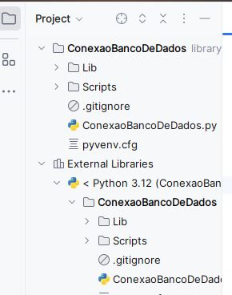
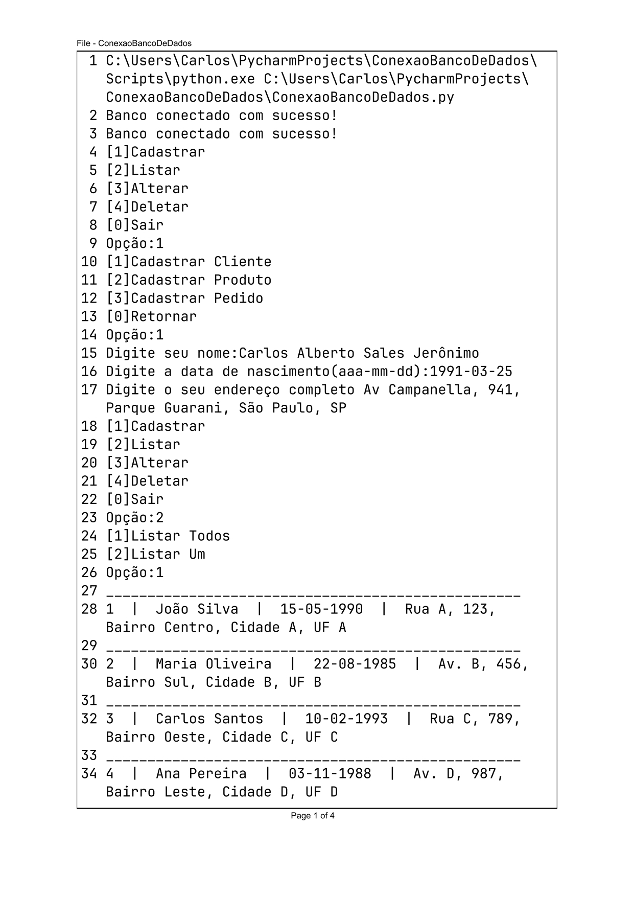
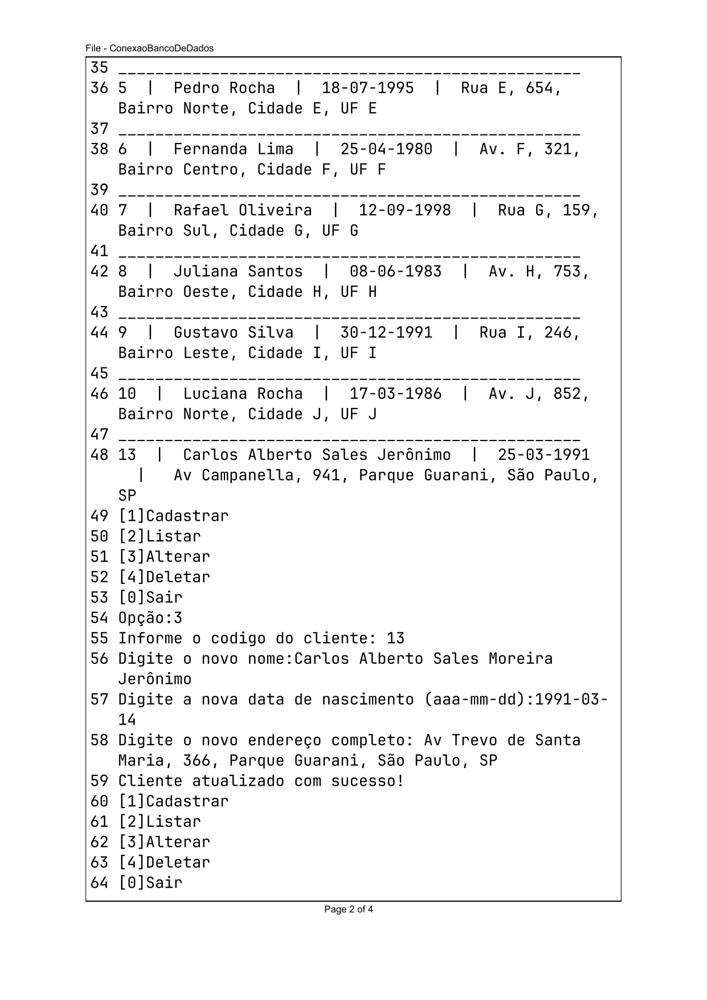
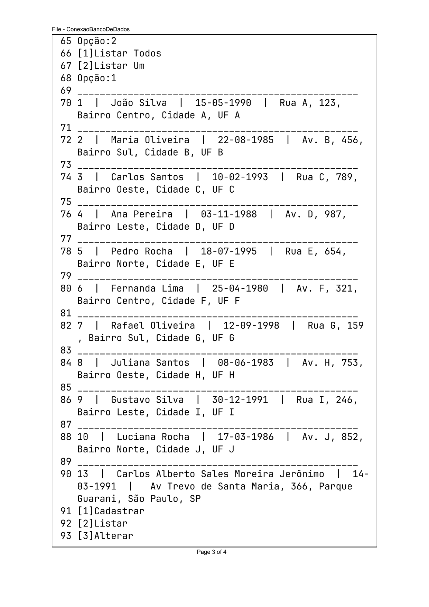
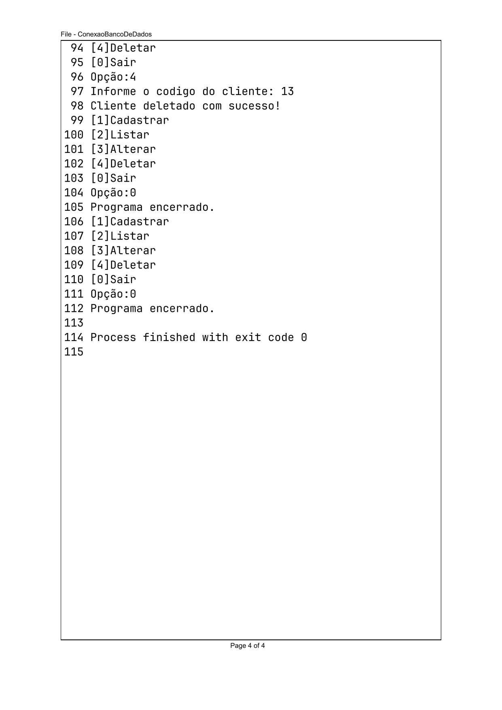

O objetivo deste projeto é desenvolver um sistema abrangente de banco de dados com funcionalidades CRUD, destinado a atender às necessidades específicas de uma loja de artesanato online. O sistema visa proporcionar uma gestão eficiente de inventário, abrangendo informações detalhadas sobre produtos, fornecedores, pedidos e clientes. Ao implementar as operações CRUD, o sistema permitirá a criação, leitura, atualização e exclusão de dados, garantindo uma experiência fluida e organizada no gerenciamento de informações cruciais para o funcionamento da loja. A integração dessas funcionalidades contribuirá para a eficácia na administração do inventário, melhorando a tomada de decisões e otimizando as operações da loja de artesanato online.
O Modelo Entidade-Relacionamento (MER) é uma técnica de modelagem de dados que visa representar visualmente as relações entre diferentes entidades em um sistema ou domínio específico. Ele é frequentemente utilizado na fase de design de banco de dados durante o desenvolvimento de sistemas de informação.

O Modelo Relacional é um modelo de dados utilizado para organizar informações em um banco de dados de forma estruturada. Ele foi proposto por Edgar F. Codd na década de 1970 e tornou-se a base para a maioria dos sistemas de gerenciamento de banco de dados relacionais (SGBDR). O Modelo Relacional é amplamente adotado na indústria de tecnologia devido à sua simplicidade, flexibilidade e eficácia na gestão de dados. Bancos de dados relacionais, como MySQL, PostgreSQL e Oracle, seguem os princípios do Modelo Relacional. Ele fornece uma estrutura lógica que facilita consultas complexas e suporta a integridade dos dados, contribuindo para a consistência e confiabilidade dos sistemas de gerenciamento de banco de dados relacionais.

O Diagrama Lógico é uma representação visual das estruturas de dados e das relações entre essas estruturas em um banco de dados. Ele oferece uma visão abstrata e mais detalhada do modelo de dados, que pode ser implementado em um Sistema de Gerenciamento de Banco de Dados (SGBD). Frequentemente utilizado na fase de design de banco de dados, após a criação do Modelo Entidade-Relacionamento (MER) ou durante a transição do modelo conceitual para o modelo lógico. Serve como um guia detalhado para a implementação física do banco de dados. Ele fornece informações essenciais para a criação de scripts SQL que definem a estrutura do banco de dados, incluindo tabelas, chaves primárias, chaves estrangeiras e outras características importantes. Essa representação ajuda a traduzir o modelo conceitual em um formato que pode ser efetivamente implementado em um SGBD específico.

O Modelo Físico é uma representação concreta e detalhada do banco de dados, mostrando como os dados são armazenados fisicamente em um Sistema de Gerenciamento de Banco de Dados (SGBD). Ao contrário do Modelo Lógico, que é mais abstrato e focado nas estruturas de dados e suas relações, o Modelo Físico considera aspectos como o armazenamento em disco, a indexação e a otimização de consultas para garantir eficiência na execução. Serve como base para a implementação prática do banco de dados e é utilizado pelos administradores de banco de dados e desenvolvedores para criar as tabelas, índices e outros objetos do banco de dados no SGBD escolhido. Ele busca otimizar o desempenho, a segurança e a eficiência do sistema de armazenamento e recuperação de dados. OBS: Os dados inseridos neste script do banco de dados são fictícios.
create database GestaoInventario;
use GestaoInventario;
CREATE TABLE Clientes (
cliente_id INT AUTO_INCREMENT PRIMARY KEY,
nome_completo VARCHAR(255) NOT NULL,
data_nascimento DATE UNIQUE NOT NULL,
endereço_completo VARCHAR(200) NOT NULL,
sexo VARCHAR(1),
email VARCHAR(40)
);
CREATE TABLE Produto (
produto_id INT AUTO_INCREMENT PRIMARY KEY,
nome VARCHAR(40),
tipo VARCHAR(40),
quantidade INT,
condição VARCHAR(40),
preco DECIMAL(10,2)
);
"CREATE TABLE" Fornecedor (
fornecedor_id INT AUTO_INCREMENT PRIMARY KEY,
CNPJ VARCHAR(20),
razao_social VARCHAR(40),
nome_fantasia VARCHAR(40),
endereco_completo VARCHAR(200),
email VARCHAR(40),
produto_id INT,
FOREIGN KEY (produto_id) REFERENCES Produto(produto_id)
);
CREATE TABLE Pedido (
pedido_id INT AUTO_INCREMENT PRIMARY KEY,
data_pedido DATE,
status_pedido VARCHAR(30),
forma_de_pagamento VARCHAR(30),
cliente_id INT,
produto_id INT,
FOREIGN KEY (cliente_id) REFERENCES Clientes(cliente_id),
FOREIGN KEY (produto_id) REFERENCES Produto(produto_id)
);
INSERT INTO
Clientes (nome_completo, data_nascimento, endereço_completo, sexo, email)
VALUES
('João Silva', '1990-05-15', 'Rua A, 123, Bairro Centro, Cidade A, UF A', 'M', 'joao.silva@email.com'),
('Maria Oliveira', '1985-08-22', 'Av. B, 456, Bairro Sul, Cidade B, UF B', 'F', 'maria.oliveira@email.com'),
('Carlos Santos', '1993-02-10', 'Rua C, 789, Bairro Oeste, Cidade C, UF C', 'M', 'carlos.santos@email.com'),
('Ana Pereira', '1988-11-03', 'Av. D, 987, Bairro Leste, Cidade D, UF D', 'F', 'ana.pereira@email.com'),
('Pedro Rocha', '1995-07-18', 'Rua E, 654, Bairro Norte, Cidade E, UF E', 'M', 'pedro.rocha@email.com'),
('Fernanda Lima', '1980-04-25', 'Av. F, 321, Bairro Centro, Cidade F, UF F', 'F', 'fernanda.lima@email.com'),
('Rafael Oliveira', '1998-09-12', 'Rua G, 159, Bairro Sul, Cidade G, UF G', 'M', 'rafael.oliveira@email.com'),
('Juliana Santos', '1983-06-08', 'Av. H, 753, Bairro Oeste, Cidade H, UF H', 'F', 'juliana.santos@email.com'),
('Gustavo Silva', '1991-12-30', 'Rua I, 246, Bairro Leste, Cidade I, UF I', 'M', 'gustavo.silva@email.com'),
('Luciana Rocha', '1986-03-17', 'Av. J, 852, Bairro Norte, Cidade J, UF J', 'F', 'luciana.rocha@email.com');
INSERT INTO Produto (nome, tipo, quantidade, condição, preco)
VALUES
('Smartphone X', 'Eletrônico', 50, 'Novo', 899.99),
('Notebook Pro', 'Eletrônico', 30, 'Usado', 1299.99),
('Cadeira Ergonômica', 'Móveis', 20, 'Novo', 199.99),
('Smart TV 4K', 'Eletrônico', 15, 'Novo', 699.99),
('Livro: "Aventuras no Espaço"', 'Livros', 100, 'Novo', 29.99),
('Mesa de Jantar', 'Móveis', 25, 'Usado', 149.99),
('Fones de Ouvido Bluetooth', 'Eletrônico', 40, 'Novo', 49.99),
('Relógio Inteligente', 'Eletrônico', 35, 'Novo', 79.99),
('Geladeira Frost Free', 'Eletrodomésticos', 10, 'Novo', 899.99),
('Console de Videogame', 'Eletrônico', 18, 'Usado', 299.99);
INSERT INTO Pedido (data_pedido, status_pedido, forma_de_pagamento,cliente_id,produto_id)
VALUES
('2023-01-10', 'Em processamento', 'Cartão de crédito',1,1),
('2023-02-15', 'Concluído', 'Boleto bancário',2,2),
('2023-03-20', 'Em processamento', 'Transferência bancária',3,3),
('2023-04-25', 'Concluído', 'Cartão de débito',4,4),
('2023-05-30', 'Cancelado', 'Pix',5,5),
('2023-06-05', 'Concluído', 'Boleto bancário',6,6),
('2023-07-10', 'Em processamento', 'Cartão de crédito',7,7),
('2023-08-15', 'Concluído', 'Transferência bancária',8,8),
('2023-09-20', 'Cancelado', 'Pix',9,9),
('2023-10-25', 'Concluído', 'Cartão de débito',10,10);
INSERT INTO Fornecedor (CNPJ, razao_social, nome_fantasia, endereco_completo, email, produto_id)
VALUES
('12.345.678/9012-34', 'Fornecedor Eletrônicos S.A.', 'Eletronics Fornecimentos', 'Rua A, 123, Bairro Centro, Cidade A, UF A', 'contato@eletronics.com', 1),
('56.789.012/3456-78', 'Móveis & Decoração Ltda.', 'Móveis R Us', 'Av. B, 456, Bairro Sul, Cidade B, UF B', 'contato@moveisrus.com', 3),
('90.123.456/7890-12', 'Fornecedor Livros Express', 'Leitura Rápida', 'Rua C, 789, Bairro Oeste, Cidade C, UF C', 'contato@livrosexpress.com', 5),
('34.567.890/1234-56', 'Eletrodomésticos Connection', 'EletroConnect', 'Av. D, 987, Bairro Leste, Cidade D, UF D', 'contato@eletroconnect.com', 9),
('78.901.234/5678-90', 'Fornecedora de Gadgets Inovadores', 'GadgetInova', 'Rua E, 654, Bairro Norte, Cidade E, UF E', 'contato@gadgetinova.com', 7),
('23.456.789/0123-45', 'Decorações Elegantes Ltda.', 'Elegância em Decoração', 'Av. F, 321, Bairro Centro, Cidade F, UF F', 'contato@eleganciadecor.com', 6),
('67.890.123/4567-89', 'Fornecedor de Utensílios Culinários', 'Chef Supplies', 'Rua G, 159, Bairro Sul, Cidade G, UF G', 'contato@chefsupplies.com', 2),
('12.345.098/7654-32', 'Fornecedor Eletrônicos Inc.', 'Eletronics Inc.', 'Av. H, 753, Bairro Oeste, Cidade H, UF H', 'contato@eletronicsinc.com', 8),
('87.654.321/0987-65', 'Móveis Modernos Ltda.', 'Modern Móveis', 'Rua I, 246, Bairro Leste, Cidade I, UF I', 'contato@modernmoveis.com', 4),
('54.321.098/7654-32', 'Fornecedor de Artigos de Entretenimento', 'Entertain Supplies', 'Av. J, 852, Bairro Norte, Cidade J, UF J', 'contato@entertainsupplies.com', 10);
Para implementar a operação CRUD, utilizamos a integração do MySQL e o Pycharm. A príncipio verificamos se o MySQL Connector/Python estava instalado, como não havia a instalação, utlizamos o seguinte comando no prompt de comando: pip install mysql-connector-python. Seguimos com a adição do suporte ao nosso banco de dados no Pycharm configurando e preechendo com as informações necessárias, como host, usuário, senha e o banco de dados. Após inserir as informações, testamos a conexão para garantir que o PyCharm pode se conectar ao nosso banco de dados MySQL, com o sucesso do teste podemos ver no painel o nosso banco de dados listado, conforme figura abaixo:
A fim de começarmos a escrever o código Python usando o Pycharm oara realizar as operações CRUD. Utilizamos o módulo mysql.connector para interagir com o banco de dados. Desse modo, para o nosso projeto, o código ficou implementado da seguinte maneira:
import mysql.connector
conexao = mysql.connector.connect(
host='localhost',
user='root',
password='senai',
database='gestaoinventario'
)
if conexao.is_connected():
print("Banco conectado com sucesso!")
else:
print("Erro ao se conectar com banco de dados.")
Desenvolvemos as funções Python para inserir, consultar, atualizar e deletar registros na tabela Clientes. Abaixo segue a estrutura dos códigos para efetuar o CRUD.
while True:
print("[1]Cadastrar\n[2]Listar\n[3]Alterar\n[4]Deletar\n[0]Sair")
opcao = int(input("Opção:"))
if opcao == 0:
print("Programa encerrado.")
break
if opcao == 1:
print("[1]Cadastrar Cliente\n[2]Cadastrar Produto\n[3]Cadastrar Pedido\n[0]Retornar")
opcao = int(input("Opção:"))
if opcao == 1:
nome_completo = input("Digite seu nome:")
data_nascimento = input("Digite a data de nascimento(aaa-mm-dd):")
endereço_completo = input("Digite o seu endereço completo")
sql=f"INSERT INTO clientes(nome_completo,data_nascimento,endereço_completo) VALUES('{nome_completo}','{data_nascimento}','{endereço_completo}')"
cursor.execute(sql)
con.commit()
if opcao == 2:
print("[1]Listar Todos\n[2]Listar Um")
opcao = int(input("Opção:"))
if opcao == 1:
sql="SELECT * FROM clientes;"
cursor.execute(sql)
retorno_do_banco =cursor.fetchall()
for i in retorno_do_banco:
print("_"*50)
print(i[0]," | ",i[1]," | ",i[2].strftime("%d-%m-%Y")," | ",i[3])
if opcao == 2:
codigo=int(input("Informe o codigo do cliente: "))
sql = f"SELECT * FROM clientes WHERE cliente_id = {codigo};"
cursor.execute(sql)
cliente=cursor.fetchone()
print(cliente)
if opcao == 3:
codigo = int(input("Informe o codigo do cliente: "))
nome_completo = input("Digite o novo nome:")
data_nascimento = input("Digite a nova data de nascimento (aaa-mm-dd):")
endereco_completo = input("Digite o novo endereço completo:")
sql = f'UPDATE clientes SET nome_completo = "{nome_completo}", data_nascimento = "{data_nascimento}", endereço_completo = "{endereco_completo}" WHERE cliente_id = {codigo}'
cursor.execute(sql)
con.commit()
print("Cliente atualizado com sucesso!")
if opcao == 4:
codigo = int(input("Informe o codigo do cliente: "))
sql=f"DELETE FROM clientes WHERE cliente_id = {codigo};"
cursor.execute(sql)
con.commit()
print("Cliente deletado com sucesso!")
Com a estrutura elaborada, realizamos o teste conforme imagens a seguir:
   Este projeto não apenas proporcionou um entendimento mais profundo do MySQL e do PyCharm, mas também serviu como uma base sólida para futuros projetos que envolvam manipulação de dados em ambientes de banco de dados. Vale ressaltar que haverão alterações neste projeto, tais como inclusões de atribuos mais específicos, normalizações e a implementação CRUD nas novas tabelas. Este trabalho representa apenas o início de uma jornada contínua no mundo do desenvolvimento de software e gerenciamento de bancos de dados.